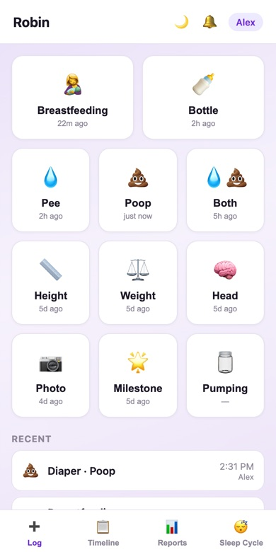
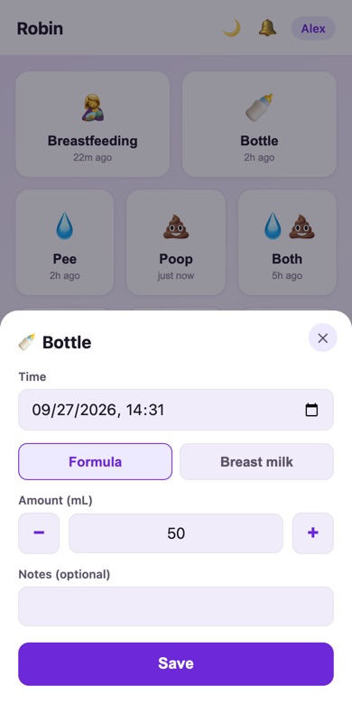
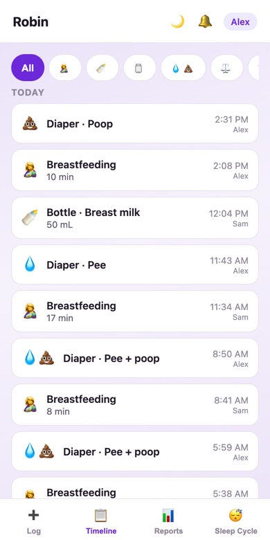
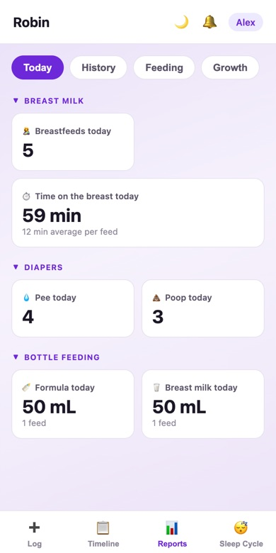
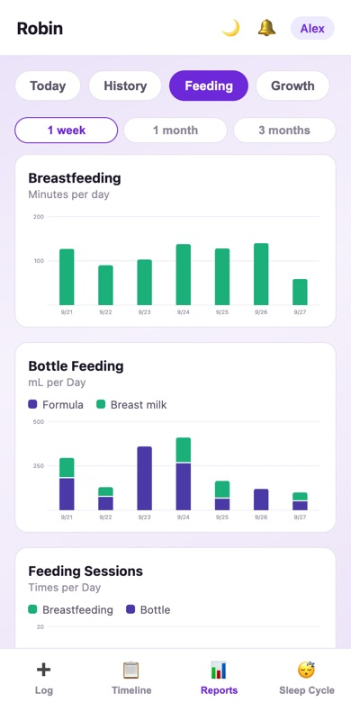
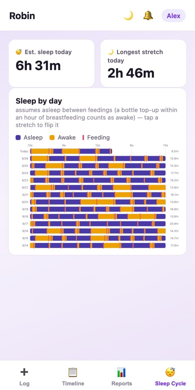
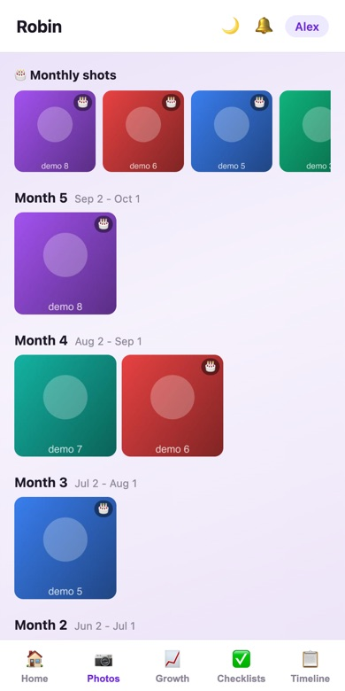
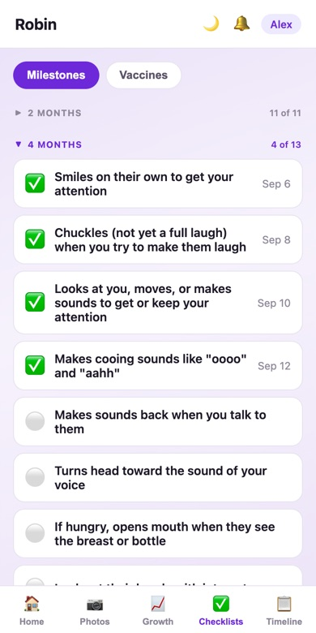
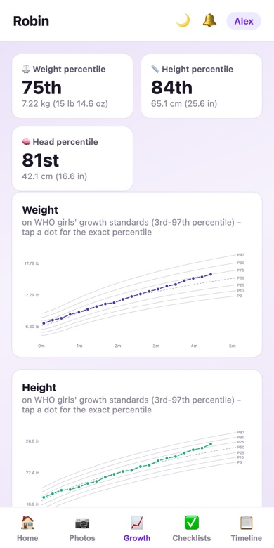

SonoraSmiles
A self-hosted app two caregivers use from their phones to track their baby.
Source and install instructions on GitHub
When our boy was born and lost a bunch of birthweight, we chronicled every feed and dirty diaper in a book, and borrowed a baby scale from the lactation consultant. This book would end up under miscellaneous parental debris, we rarely had our hands free, we'd forget to update it, and we rarely ever looked at the data again after it became obvious that he was putting on weight like a silverback gorilla.
For round two, it took only a day of the book before my wife asked "can you make an app for this?" Thanks to Claude, I had a prototype in one night and could add features and bugfixes in real-time as she proposed them, such as inferred sleep cycles and AI image analysis of whether a poopy diaper needs an emergency visit to the pediatrician.






This was my first time building and maintaining a phone app. I registered a fly.io server, which costs only pennies a month for personal use. It was also interesting to bang my head against hardware constraints. For instance, we wanted hands-free voice logging, but Siri is intrinsically monolingual, which was a poor fit for our bilingual English and Mandarin Chinese family. We wound up with two solutions, an English-only Siri command, and an in-app button allowing any arbitrary mixture of English and Chinese via cheap Groq calls.
The most interesting design challenge was our transition from newborn stage, when the app was critical, to "ok, my baby is probably going to survive" around the one-month mark. With baby number two, I observed that we often lacked the bandwidth to appreciate the moment, so I prioritized periodic photo nudges (take a picture of your baby!), record-keeping like vaccine records, a built-in milestone tracker, and growth charts.



Screenshots are from a demo instance with synthetic data.